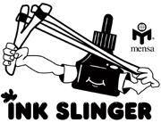

Community Partners
Recycleabook.com continually strives to be active and helpful in the community. We proudly donate books to projects, libraries and other good causes across the country. Here are some of our current partnerships:
Public Libraries
Our team of buyers makes regular stops at public libraries across the country to donate previous editions of texts. All books deserve a good home. By sharing them with the public for free, we provide a valuable service and source of higher education.
Prison Libraries
Recycleabook.com has donated more than 10,000 books to prison libraries in the Midwest. There are tens of thousands of inmates who genuinely want to reshape their lives, pursue an education and contribute to society upon their release. Access to textbooks is a crucial part of that noble path.
Project Inkslinger
Building libraries through Project Inkslinger® "A room without books is like a body without a soul" — CiceroMensa and Mensans can give libraries — and entire towns — a soul. Project Inkslinger® was founded in 1993 to restore a single library, destroyed when the Mississippi flooded parts of the Midwest and South, which lacked the resources to re-establish itself. If the program was successful, the intention was to later support other libraries that were destroyed by calamity.
The program was planned and implemented totally within Mensa — idea conception, book collection, preparation of a database for the librarians, and even delivery, with members using their own backs and hands to put books on the shelves. Inkslinger was heavily supported by well-respected university librarian and Mensan Jean Cooper of Virginia, who helped identify libraries that would otherwise fold up and not rebuild and also helped create realistic guidelines for the condition of books donated. Inkslinger was founded by Oklahoma Mensan T.J. Lundeen.
"Our goal was to give a town a library and give back its exceptional reading program for children — one of the reasons that particular library was chosen", Lundeen said. "It was also important to us to show how much we cared for books, for the concept that every child in every place needs to be literate." The fact that thousands and thousands of books were gathered allowed the refurbishment of part of the junior college library in Doniphan Conty and several of the other county libraries. Thousands more of the books collected for the original project that could not be delivered went to the next disaster-struck library in Grand Canyon, Ariz.
Donated books bear the Project Inkslinger bookplate with Mensa logo. Lundeen still occasionally hears from someone who read an Inkslinger book from the original library and finds her through the Web to say thank you and to tell her how a certain book changed his or her life.
The face of Project Inkslinger has of course changed over time. It currently supplies information on programs that need book donations and is expanding to include more general philanthropic projects. If you are interested in volunteering in any facet of the program, contact the Project Inkslinger Coordinator.